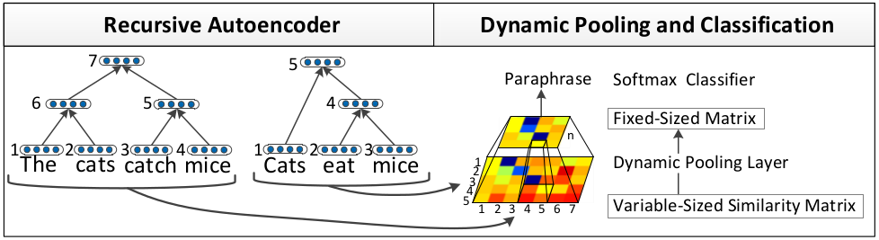
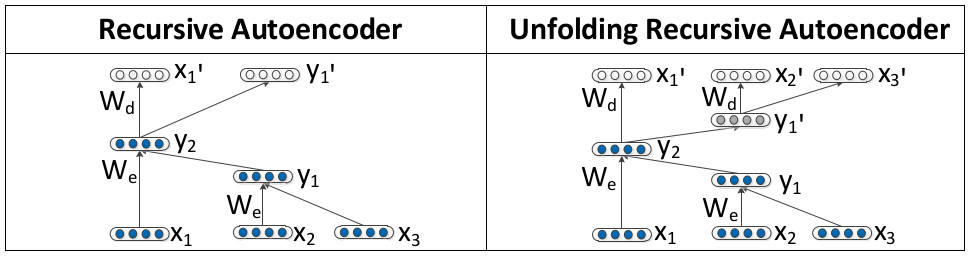
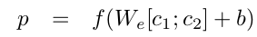
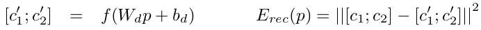
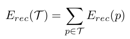
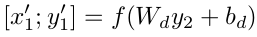
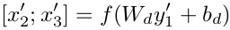
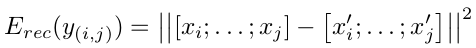
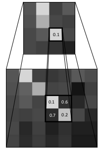

Dynamic Pooling and Unfolding Recursive Autoencoders for Paraphrase Detection
"What" part of the paper
Paraphrase Detection using a method which incorporates not just single words but also phrase level semantics.
"How" part of the paper
First RAE is used to get a similarity matrix, this simililarity matrix is passed to dynamic pooling to get a fixed length matrix which can be used to train any classifier for paraphrase identification.
To incorporate word level and phrase level semantics to identify paraphrases, Recursive Autoencoder (RAE) are used. For a given sentence we find binary parse tree. We take embeddings of each word, for a given parse of two words to a parent node(childern will always be two because of the binary parse tree) we take embeddings of both children, concatnate them and pass it through a single layer neural network to get embedding of the parent node. We repeate this for each binary parse with same weights of neural network everytime.
To train the weights, we try to re-generate the children representation from the parent node representation. We calculate the error between original representation and re-generated representation and train the weights to reduce this error.
 We find the parent node representation with child representation as follows: Note that the leaves of the tree will be word embeddings. Then we use another decoding linear layer with different weights to re-generate the children from the parent representation. And we compute the error to trains the encoding and decoding weights as follows:
Total error of whole tree T is given as:
There is also another Unfolding Recursive Autoencoder where the encoding scheme is the same but for decoding step it tries to reconstruct the entire spanned subtree underneath each node. Changes with respect to above equations is as shown:
  We then compute Euclidean distances between all word and phrase vectors of the two sentences from the RAE tree to get the similarity matrix. This way we incorporate similarity between all words and phrases between two sentences.
Dynamic Pooling is used to transform variable length similarity matrix to fixed length. Lets say we have similarity matrix of size m x n and we want to convert it to A x A. Then we first partition similarity matrix into A roughly equal parts and we take minimum value from each of the rectangular region of this grid. We will then have a fixed size matrix to train any classifier.